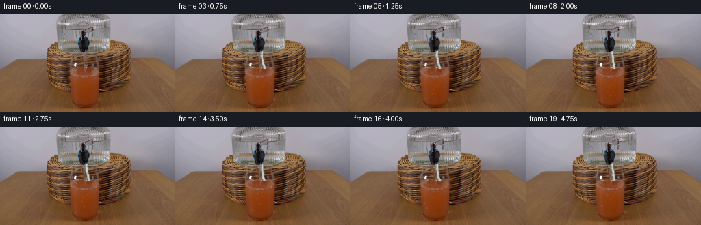
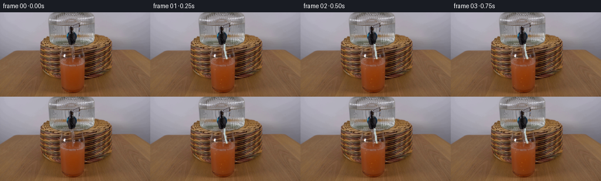

CODING AGENTS AS PIXEL WORLD MODELS
traex/DeepSeek-V4.1-Flash · 0185
点击播放 · 原生 RGB 像素
逐轮保存的候选
回放视频、检查图与代码变化。
每份候选均可单独播放。实际图片检查记录在下方工具轨迹中。
候选 01播放与检查图
点击播放 · 原生 RGB 像素

展开代码变化
--- 上一保存版本
+++ 本次保存版本
@@ -0,0 +1,171 @@
+from pathlib import Path
+
+import numpy as np
+from PIL import Image, ImageFilter
+
+import artifact_io
+
+
+ROOT = Path(__file__).resolve().parent
+W, H, N, FPS = 256, 144, 20, 4
+
+
+def smoothstep(x):
+ x = np.clip(x, 0.0, 1.0)
+ return x * x * (3.0 - 2.0 * x)
+
+
+def value_noise(y, x, seed=0):
+ """Smooth, deterministic low-amplitude texture."""
+ a = (
+ np.sin(x * 0.217 + y * 0.131 + seed * 1.73)
+ + 0.56 * np.sin(x * 0.477 - y * 0.283 + seed * 2.19)
+ + 0.31 * np.sin(x * 0.931 + y * 0.617 + seed * 0.91)
+ )
+ b = (
+ np.cos(x * 0.173 - y * 0.193 + seed * 2.43)
+ + 0.48 * np.cos(x * 0.563 + y * 0.331 + seed * 1.13)
+ )
+ return (a + b) / 3.2
+
+
+def ellipse_metric(x, y, cx, cy, rx, ry):
+ return ((x - cx) / rx) ** 2 + ((y - cy) / ry) ** 2
+
+
+def make_stream(frame_idx, base):
+ """Draw a short, gravity-curved water ribbon from the dispenser outlet."""
+ f = np.asarray(base, dtype=np.float32).copy()
+ yy, xx = np.mgrid[:H, :W]
+
+ t = frame_idx / FPS
+ # The outlet is at the lower lip of the dark dispenser. The small
+ # horizontal offset follows the already visible highlight on the glass.
+ start_y = 54.0
+ end_y = 78.0
+ mouth_x = 126.0
+ impact_x = 129.5 + 0.25 * np.sin(2.1 * t)
+ phase = 2.0 * np.pi * (2.1 * t)
+
+ # A tapered water column, with a subtle transparent edge.
+ y0 = max(0, int(np.floor(start_y)))
+ y1 = min(H, int(np.ceil(end_y)) + 2)
+ for y in range(y0, y1):
+ u = np.clip((y - start_y) / (end_y - start_y), 0.0, 1.0)
+ center = mouth_x + (impact_x - mouth_x) * (u ** 1.7)
+ center += 0.32 * np.sin(phase + y * 0.21)
+ width = 1.15 + 0.58 * u + 0.12 * np.sin(phase + y * 0.31)
+ # Water is thin and bright where the background is visible through it.
+ core = np.exp(-((xx - center) / width) ** 4)
+ edge = np.exp(-((xx - center) / (width + 1.55)) ** 4)
+ stream_mask = (yy == y) * core
+ edge_mask = (yy == y) * edge
+
+ water = np.array([188.0, 207.0, 209.0], dtype=np.float32)
+ # Slight variation avoids a flat, synthetic ribbon.
+ water += 10.0 * np.sin(y * 0.74 + phase) * np.array([0.45, 0.8, 0.7])
+ f += stream_mask[..., None] * (water - f) * 0.88
+ f += edge_mask[..., None] * np.array([96.0, 126.0, 131.0]) * 0.10
+
+ # Falling droplets and small highlights make the stream read as moving
+ # water rather than a static painted line.
+ for k in range(5):
+ dy = ((k * 5.1 + t * 18.5) % 27.0) + 53.0
+ if dy > 78.5:
+ continue
+ u = np.clip((dy - start_y) / (end_y - start_y), 0.0, 1.0)
+ dx = mouth_x + (impact_x - mouth_x) * (u ** 1.7)
+ dx += 1.25 * np.sin(phase * 0.8 + k * 2.4)
+ r = 0.8 + 0.35 * (k % 3)
+ m = np.exp(-(((xx - dx) / r) ** 2 + ((yy - dy) / (r * 1.35)) ** 2))
+ f += m[..., None] * (np.array([212.0, 226.0, 224.0]) - f) * 0.72
+
+ # Contact splash and a tiny circular disturbance at the liquid surface.
+ splash_y = 78.0
+ rx = 4.5 + 1.0 * np.sin(phase + 0.6)
+ ry = 1.15 + 0.35 * np.sin(phase * 1.3)
+ m = np.exp(-(((xx - impact_x) / rx) ** 2 + ((yy - splash_y) / ry) ** 2))
+ f += m[..., None] * (np.array([174.0, 150.0, 107.0]) - f) * 0.30
+
+ # The dispenser has a narrow dark lip; preserve it over the stream.
+ lip = ((xx >= 116) & (xx <= 137) & (yy >= 22) & (yy <= 55))
+ lip_soft = np.exp(-(((xx - 126.5) / 7.8) ** 6 + ((yy - 38.0) / 16.0) ** 6))
+ f = f * (1.0 - 0.05 * lip_soft[..., None]) + base * (0.05 * lip_soft[..., None])
+ return f
+
+
+def make_liquid_motion(frame_idx, base):
+ """Add a physically plausible fill rise and small surface waves."""
+ f = np.asarray(base, dtype=np.float32).copy()
+ yy, xx = np.mgrid[:H, :W]
+ t = frame_idx / FPS
+
+ # The initial liquid already reaches about y=78. The pour raises it only
+ # a little over five seconds, keeping the shot stable and believable.
+ level0 = 78.0
+ level = level0 - (0.18 + 0.62 * smoothstep(t / 5.0))
+
+ # The inside of the glass is an approximately elliptical vessel.
+ cx, cy = 126.0, 94.0
+ rx, ry = 22.0, 54.0
+ inside = ((xx - cx) / rx) ** 2 + ((yy - cy) / ry) ** 2 <= 1.0
+
+ # The initial surface is slightly curved, so the water surface blends
+ # into the original juice without a hard, artificial seam.
+ surface = level + 1.15 * np.sin((xx - cx) * 0.29 + t * 5.0) * np.exp(-((xx - cx) / 17.0) ** 2)
+ surface += 0.35 * np.sin((xx - cx) * 0.72 - t * 8.0)
+ below = inside & (yy >= surface)
+ # Only repaint a restrained band near the surface. The lower body is
+ # retained from the source frame, preserving its rich juice shading.
+ band = below & (yy <= level + 13.0)
+ depth = np.clip((yy - surface) / 13.0, 0.0, 1.0)
+ ripples = 0.5 + 0.5 * np.sin((xx - cx) * 0.38 + t * 6.1 + yy * 0.13)
+ tint = np.stack(
+ [
+ 145.0 - 7.0 * depth + 2.0 * ripples,
+ 65.0 - 6.0 * depth + 1.2 * ripples,
+ 24.0 + 1.5 * depth + 0.8 * ripples,
+ ],
+ axis=-1,
+ )
+ alpha = (0.13 + 0.14 * depth) * band
+ f = f * (1.0 - alpha[..., None]) + tint * alpha[..., None]
+
+ # Fresnel-like bright meniscus and a small warm reflection at the top.
+ line_y = surface
+ meniscus = np.exp(-((yy - line_y) / 0.75) ** 2) * inside
+ f += meniscus[..., None] * np.array([20.0, 15.0, 8.0])
+ top_glint = np.exp(-(((xx - 111.0) / 4.2) ** 2 + ((yy - line_y) / 1.2) ** 2))
+ f += top_glint[..., None] * np.array([34.0, 38.0, 31.0])
+
+ # A handful of fine bubbles migrate slowly upward inside the juice.
+ for k in range(8):
+ bx = 108.0 + ((k * 7.3 + 4.1 * np.sin(k * 1.8)) % 36.0)
+ by = 128.0 - ((k * 5.9 + t * (4.0 + 0.7 * (k % 3))) % 42.0)
+ br = 0.55 + 0.22 * (k % 3)
+ m = np.exp(-(((xx - bx) / br) ** 2 + ((yy - by) / br) ** 2))
+ m *= (yy > surface + 1.0) & (yy < 132.0)
+ f += m[..., None] * np.array([22.0, 24.0, 13.0])
+
+ # A gentle moving reflection on the upper glass; the rest of the glass is
+ # left untouched to preserve the source photograph.
+ glint = np.exp(-(((xx - 110.0) / 4.8) ** 2 + ((yy - (54.0 + 1.2 * np.sin(t * 2.1))) / 8.0) ** 2))
+ f += glint[..., None] * np.array([14.0, 16.0, 14.0])
+ return f
+
+
+def generate():
+ base = np.asarray(Image.open(ROOT / "first_frame.png").convert("RGB"), dtype=np.uint8)
+ frames = []
+ for i in range(N):
+ if i == 0:
+ frames.append(base.copy())
+ continue
+ f = make_liquid_motion(i, base)
+ f = make_stream(i, f)
+ frames.append(np.clip(np.rint(f), 0, 255).astype(np.uint8))
+ return np.stack(frames)
+
+
+if __name__ == "__main__":
+ artifact_io.save(generate(), ROOT)
候选 02播放与检查图
点击播放 · 原生 RGB 像素

展开代码变化
--- 上一保存版本
+++ 本次保存版本
@@ -1,7 +1,7 @@
from pathlib import Path
import numpy as np
-from PIL import Image, ImageFilter
+from PIL import Image
import artifact_io
@@ -13,24 +13,6 @@
def smoothstep(x):
x = np.clip(x, 0.0, 1.0)
return x * x * (3.0 - 2.0 * x)
-
-
-def value_noise(y, x, seed=0):
- """Smooth, deterministic low-amplitude texture."""
- a = (
- np.sin(x * 0.217 + y * 0.131 + seed * 1.73)
- + 0.56 * np.sin(x * 0.477 - y * 0.283 + seed * 2.19)
- + 0.31 * np.sin(x * 0.931 + y * 0.617 + seed * 0.91)
- )
- b = (
- np.cos(x * 0.173 - y * 0.193 + seed * 2.43)
- + 0.48 * np.cos(x * 0.563 + y * 0.331 + seed * 1.13)
- )
- return (a + b) / 3.2
-
-
-def ellipse_metric(x, y, cx, cy, rx, ry):
- return ((x - cx) / rx) ** 2 + ((y - cy) / ry) ** 2
def make_stream(frame_idx, base):
@@ -88,7 +70,6 @@
f += m[..., None] * (np.array([174.0, 150.0, 107.0]) - f) * 0.30
# The dispenser has a narrow dark lip; preserve it over the stream.
- lip = ((xx >= 116) & (xx <= 137) & (yy >= 22) & (yy <= 55))
lip_soft = np.exp(-(((xx - 126.5) / 7.8) ** 6 + ((yy - 38.0) / 16.0) ** 6))
f = f * (1.0 - 0.05 * lip_soft[..., None]) + base * (0.05 * lip_soft[..., None])
return f
可观测工具轨迹
实际执行的命令与返回图片。
命令 1exit 0
/bin/bash -c "pwd && rg --files -g '"'!*.pyc'"' -g '"'!__pycache__'"' | sed -n '1,200p'"
命令 2exit 0
/bin/bash -c "sed -n '1,240p' prompt.txt"
命令 3exit 0
/bin/bash -c "sed -n '1,280p' GENERATION_RULES.md"
命令 4exit 127
/bin/bash -c 'ls -la && file first_frame.png && git status --short'
命令 5exit 0
/bin/bash -c "sed -n '1,260p' artifact_io.py"
命令 6exit 0
/bin/bash -c "sed -n '1,280p' player_template.html"
命令 7exit 0
/bin/bash -c "python - <<'PY'
from PIL import Image
import numpy as np
im=Image.open('first_frame.png')
print(im.mode, im.size)
a=np.asarray(im.convert('RGB'))
print(a.shape,a.dtype)
print('min/max/mean',a.min((0,1)),a.max((0,1)),a.mean((0,1)))
# dominant exact colors
u,c=np.unique(a.reshape(-1,3),axis=0,return_counts=True)
ix=np.argsort(c)[-30:][::-1]
for j in ix: print(tuple(u[j]),int(c[j]))
PY"命令 8exit 0
/bin/bash -c "python - <<'PY'
try:
import cv2; print('cv2',cv2.__version__)
except Exception as e: print('no cv2',e)
try:
import scipy; print('scipy',scipy.__version__)
except Exception as e: print('no scipy',e)
PY"命令 9exit 0
/bin/bash -c 'which ffmpeg || true; which convert || true; which chafa || true; which viu || true; which jp2 || true; which tesseract || true'
命令 10exit 0
/bin/bash -c "python - <<'PY'
from PIL import Image
import numpy as np
im=np.asarray(Image.open('first_frame.png').convert('RGB')).astype(float)
# average 2x2 to 128x72 then choose luminance; ascii dark pixels on light background
lum=im@np.array([.2126,.7152,.0722])
chars='@%#*+=-:. '
# 128x72, char dark to dense
for y in range(0,144,2):
line=''
for x in range(0,256,2):
v=lum[y:y+2,x:x+2].mean()
idx=int(np.clip((v-20)/(235-20)*(len(chars)-1),0,len(chars)-1))
line+=chars[idx]
print(line.rstrip())
PY"命令 11exit 1
/bin/bash -c "python - <<'PY'
import cv2,numpy as np
from PIL import Image
im=cv2.imread('first_frame.png')[:,:,::-1]
# kmeans in Lab? RGB
Z=im.reshape(-1,3).astype(np.float32)
crit=(cv2.TERM_CRITERIA_EPS+cv2.TERM_CRITERIA_MAX_ITER,50,.5)
K=12
_,lab,cen=cv2.kmeans(Z,K,None,crit,8,cv2.KMEANS_PP_CENTERS)
lab=lab.reshape(144,256)
order=np.lexsort((cen[:,2],cen[:,1],cen[:,0]))
# print centers and chars sorted by luminance
lum=cen@np.array([.2126,.7152,.0722])
chars='@%#*+=-:. '
ix=np.argsort(lum)[::-1]
print([(int(i),tuple(np.rint(cen[i]).astype(int)),round(float(lum[i]))) for i in ix])
# char darkest=@ lightest=space
rank={int(i):chars[j] for j,i in enumerate(ix)}
for y in range(0,144,2):
line=''
for x in range(0,256,2):
ids=lab[y:y+2,x:x+2].ravel(); vals,cts=np.unique(ids,return_counts=True); i=vals[np.argmax(cts)]
line+=rank[int(i)]
print(line.rstrip())
PY"命令 12exit 0
/bin/bash -c "python - <<'PY'
from PIL import Image
import numpy as np
im=np.asarray(Image.open('first_frame.png').convert('RGB')).astype(int)
# 16x9 blocks
for y in range(0,144,16):
row=[]
for x in range(0,256,16):
p=im[y:y+16,x:x+16].reshape(-1,3).mean(0).astype(int)
row.append('%02x%02x%02x'%tuple(p))
print(y//16, ' '.join(row))
PY"命令 13exit 0
/bin/bash -c "python - <<'PY'
import cv2,numpy as np
im=cv2.imread('first_frame.png')
g=cv2.cvtColor(im,cv2.COLOR_BGR2GRAY)
# denoise then Canny
for lo,hi in [(20,50),(40,100)]:
e=cv2.Canny(g,lo,hi)
# dilate? print 2x2 OR
print('\\nCanny',lo,hi)
for y in range(0,144,2):
line=''
for x in range(0,256,2):
n=e[y:y+2,x:x+2].sum()
line += '#' if n>=255*2 else '+' if n>0 else ' '
print(line.rstrip())
PY"命令 14exit 0
/bin/bash -c "python - <<'PY'
from PIL import Image
import numpy as np
im=np.asarray(Image.open('first_frame.png').convert('RGB'))
# Print hue map for key bands and edge locations via scanline RGB samples
for y in [0,10,20,30,40,50,60,70,80,90,100,110,120,130,140]:
print('\\ny',y)
# runs of quantized color categories
def cat(p):
r,g,b=map(int,p)
if r<65 and g<65 and b<65:return 'K'
if b-r>15 and b-g>5:return 'V' # violet/glass
if r>g+30 and g>b+15:return 'O' # orange/brown
if r>g+20 and g>b+30:return 'R'
if max(r,g,b)-min(r,g,b)<20:return 'G' # gray
return '?'
s=''.join(cat(im[y,x]) for x in range(256))
# run length
out=[];last=s[0];start=0
for i,c in enumerate(s[1:],1):
if c"'!=last:
if i-start>=3:out.append(f'"'{last}{start}-{i-1}')
start=i;last=c
if 256-start>=3:out.append(f'{last}{start}-255')
print(' '.join(out))
PY"命令 15exit 0
/bin/bash -c "python - <<'PY'
from PIL import Image
import numpy as np
im=np.asarray(Image.open('first_frame.png').convert('RGB'))
# save crops enlarged nearest, maybe use cv2 edge/color analysis later
for name,box in {'top':(0,0,256,80),'bottom':(0,64,256,144),'center':(80,20,200,125),'left':(0,20,150,100)}.items():
x0,y0,x1,y1=box
Image.fromarray(im[y0:y1,x0:x1]).resize(((x1-x0)*4,(y1-y0)*4),Image.Resampling.NEAREST).save('.tmp/'+name+'.png')
PY"命令 16exit 0
/bin/bash -c "python - <<'PY'
from PIL import Image
import numpy as np
im=np.asarray(Image.open('first_frame.png').convert('RGB')).astype(float)
# print image as 4x4 blocks using colored ANSI backgrounds? Terminal maybe no. Use chars based on hue/val and RGB map.
# identify dark areas <80, blue/purple areas b>r+15, orange r>g+20 and g>b+10
for y in range(0,144,4):
line=''
for x in range(0,256,4):
p=im[y:y+4,x:x+4].reshape(-1,3).mean(0);r,g,b=p
if max(p)<45: c='@'
elif b-r>14 and b-g>8: c='B'
elif r-g>45 and g-b>10: c='R'
elif r-g>25 and g-b>8: c='o'
elif max(p)-min(p)<16: c='.'
elif r<100 and g<100 and b<100: c='k'
else: c=' '
line+=c
print(line.rstrip())
PY"命令 17exit 0
/bin/bash -c "python - <<'PY'
from PIL import Image
import numpy as np
im=np.asarray(Image.open('first_frame.png').convert('RGB')).astype(float)
# robust summarize regions: center dispenser dark rectangle, glass, etc. Print row color stats in selected windows
for label,(x0,x1,y0,y1) in {'dispenser':(112,140,25,75),'glass':(105,175,45,130),'bg_top':(0,90,0,50),'bg_right':(200,256,0,40),'table':(0,256,115,144)}.items():
a=im[y0:y1,x0:x1]
print(label,'mean',a.mean((0,1)).round(1),'median',np.median(a.reshape(-1,3),0),'min',a.min((0,1)),'max',a.max((0,1)))
PY"命令 18exit 0
/bin/bash -c "python - <<'PY'
import cv2
im=cv2.imread('first_frame.png')
for name,(x,y,w,h) in {'disp':(95,20,70,65),'glass':(95,45,90,90),'pour':(100,15,90,70)}.items():
c=im[y:y+h,x:x+w]
cv2.imwrite('.tmp/'+name+'_nearest.png',cv2.resize(c,None,fx=8,fy=8,interpolation=cv2.INTER_NEAREST))
cv2.imwrite('.tmp/'+name+'_smooth.png',cv2.resize(c,None,fx=8,fy=8,interpolation=cv2.INTER_CUBIC))
PY"命令 19exit 0
/bin/bash -c "python - <<'PY'
from PIL import Image
import numpy as np
im=np.asarray(Image.open('first_frame.png').convert('RGB')).astype(float)
# exact RGB at grid
for y in range(20,81,5):
print('y',y, ['%3d,%3d,%3d'%tuple(im[y,x].astype(int)) for x in range(100,181,10)])
PY"命令 20exit 0
/bin/bash -c "python - <<'PY'
import cv2,numpy as np
im=cv2.imread('first_frame.png')
# Make contour overlays from Canny, and candidate line/ellipse detection via Hough circles / edges.
g=cv2.cvtColor(im,cv2.COLOR_BGR2GRAY)
# Hough circles on glass region
for p2 in [20,30,40,50]:
cs=cv2.HoughCircles(g,cv2.HOUGH_GRADIENT,1.2,20,param1=60,param2=p2,minRadius=15,maxRadius=100)
print('p2',p2,None if cs is None else np.rint(cs[0]).astype(int).tolist()[:10])
# line segments
ed=cv2.Canny(g,30,80)
ls=cv2.HoughLinesP(ed,1,np.pi/180,threshold=20,minLineLength=15,maxLineGap=4)
print('lines')
for l in (ls[:,0] if ls is not None else [])[:80]: print(tuple(l))
PY"命令 21exit 0
/bin/bash -c "python - <<'PY'
import cv2,numpy as np
im=cv2.imread('first_frame.png')[:,:,::-1]
# Print downscaled pseudo-color classifications with enough detail 128x72; classes based on dominant structure
for y in range(0,144,2):
line=''
for x in range(0,256,2):
p=im[y:y+2,x:x+2].reshape(-1,3).mean(0);r,g,b=p
mx=p.max();mn=p.min(); sat=mx-mn
if mx<45:c='@'
elif r<105 and g<100 and b<100:c='k'
elif b-r>18 and b-g>8:c='V'
elif r-g>50 and g-b>15:c='R'
elif r-g>30 and g-b>10:c='O'
elif r-g>15 and g-b>5:c='o'
elif mx>160:c='.'
elif mx>130:c='-'
elif mx>100:c='+'
else:c='*'
line+=c
print(line.rstrip())
PY"命令 22exit 0
/bin/bash -c "python - <<'PY'
from PIL import Image
import numpy as np
im=np.asarray(Image.open('first_frame.png').convert('RGB')).astype(float)
# print a small color grid for dispenser x 110..170, y 25..85 using hex block averages 2x2
for y in range(24,86,2):
vals=[]
for x in range(108,172,2):
p=im[y:y+2,x:x+2].reshape(-1,3).mean(0).astype(int)
vals.append('%02x%02x%02x'%tuple(p))
print(f'{y:3d} '+' '.join(vals))
PY"命令 23exit 0
/bin/bash -c "python - <<'PY'
import cv2,numpy as np
im=cv2.imread('first_frame.png')
# Test optical flow noise / exact difference? just identify near-white mask and connected components
rgb=im[:,:,::-1]
mask=((rgb[:,:,0]>190)&(rgb[:,:,1]>185)&(rgb[:,:,2]>180)).astype(np.uint8)
n,lab,stats,cen=cv2.connectedComponentsWithStats(mask,8)
print('white comps')
for s in stats[1:]:
x,y,w,h,a=s
if a>3:print(tuple(s))
# dark mask comps
mask=(rgb.max(2)<60).astype(np.uint8)
n,lab,stats,cen=cv2.connectedComponentsWithStats(mask,8)
print('dark comps')
for s in stats[1:]:
x,y,w,h,a=s
if a>10:print(tuple(s))
PY"命令 24exit 0
/bin/bash -c "python - <<'PY'
from PIL import Image
import numpy as np
im=np.asarray(Image.open('first_frame.png').convert('RGB')).astype(int)
# inspect vertical bands likely glass edges: for each y, print runs where grayish/blue and orange boundary. summary at x bins
for y in range(30,130,5):
# color along row at key x 80..200 every 4
print(f'{y:3d}', ' '.join('%02x%02x%02x'%tuple(im[y,x]) for x in range(80,201,4)))
PY"命令 25exit 0
/bin/bash -c "python - <<'PY'
from PIL import Image
import numpy as np
im=np.asarray(Image.open('first_frame.png').convert('RGB')).astype(int)
# manually characterize pixels in glass center: print 4x4 block average hex over x100-200 y55-135, 4px cells
for y in range(56,136,4):
vals=[]
for x in range(96,204,4):
p=im[y:y+4,x:x+4].reshape(-1,3).mean(0).astype(int)
vals.append('%02x%02x%02x'%tuple(p))
print(f'{y:3d} '+' '.join(vals))
PY"命令 26exit 0
/bin/bash -c "python - <<'PY'
from PIL import Image
import numpy as np
im=np.asarray(Image.open('first_frame.png').convert('RGB')).astype(int)
# detect rounded glass edges by color changes along rows; print rows and ranges where center orange is > 60 and r-g>20
for y in range(40,136,2):
s=((im[y,:,0]-im[y,:,1]>30)&(im[y,:,0]>90)&(im[y,:,2]<80)).astype(int)
runs=[];st=None
for i,v in enumerate(s):
if v and st is None:st=i
if st is not None and (not v or i==255):
en=i-1 if not v else i
if en-st>3:runs.append((st,en))
st=None
print(y,runs)
PY"命令 27exit 0
/bin/bash -c "python - <<'PY'
from PIL import Image
import numpy as np
im=np.asarray(Image.open('first_frame.png').convert('RGB')).astype(int)
# report gradients and sample colors at lines x around dispenser center
for x in [110,112,114,116,118,120,122,124,126,128,130,132,134,136,138,140,142,144,146,148,150,152,154,156,158,160,162,164,166,168,170]:
print('x',x,' '.join('%3d'%im[y,x,0] for y in range(20,90,2)))
PY"命令 28exit 0
/bin/bash -c "python - <<'PY'
import cv2,numpy as np
from PIL import Image
im=np.asarray(Image.open('first_frame.png').convert('RGB'))
lab=cv2.cvtColor(im,cv2.COLOR_RGB2LAB)
Z=lab.reshape(-1,3).astype(np.float32)
K=16
crit=(cv2.TERM_CRITERIA_EPS+cv2.TERM_CRITERIA_MAX_ITER,80,.2)
_,ids,cen=cv2.kmeans(Z,K,None,crit,10,cv2.KMEANS_PP_CENTERS)
ids=ids.reshape(144,256)
rgb=cv2.cvtColor(cen.reshape(1,-1,3).astype(np.uint8),cv2.COLOR_LAB2RGB)[0]
lum=rgb@np.array([.2126,.7152,.0722])
print('clusters:')
for i in range(K):
ys,xs=np.where(ids==i); cnt=len(xs)
print(i,tuple(rgb[i]),'lum',round(float(lum[i])), 'count',cnt,'bbox',(xs.min(),ys.min(),xs.max(),ys.max()),'mean',(round(xs.mean()),round(ys.mean())))
# print map with letter by luminance/hue index labels sorted
order=np.argsort(lum)[::-1]
chars='0123456789ABCDEF'
rank={int(i):chars[j] for j,i in enumerate(order)}
print('map 2x2 mode')
for y in range(0,144,2):
line=''
for x in range(0,256,2):
v=ids[y:y+2,x:x+2].ravel(); u,c=np.unique(v,return_counts=True);line+=rank[int(u[np.argmax(c)])]
print(line.rstrip())
PY"命令 29exit 0
/bin/bash -c "python - <<'PY'
import cv2,numpy as np
from PIL import Image
im=np.asarray(Image.open('first_frame.png').convert('RGB'))
# color cluster masks to reveal semantic forms; print ascii using selected clusters from previous run? rerun kmeans then map cluster indexes to symbols
lab=cv2.cvtColor(im,cv2.COLOR_RGB2LAB); Z=lab.reshape(-1,3).astype(np.float32)
crit=(cv2.TERM_CRITERIA_EPS+cv2.TERM_CRITERIA_MAX_ITER,80,.2)
_,ids,cen=cv2.kmeans(Z,16,None,crit,10,cv2.KMEANS_PP_CENTERS); ids=ids.reshape(144,256)
rgb=cv2.cvtColor(cen.reshape(1,-1,3).astype(np.uint8),cv2.COLOR_LAB2RGB)[0]
# assign chars by hue/light
chars=[]
for p in rgb:
r,g,b=map(int,p)
if b-r>18: c='V'
elif r-g>45 and g-b>12:c='R'
elif r-g>25 and g-b>8:c='O'
elif r-g>12:c='o'
elif max(p)<45:c='@'
elif max(p)<90:c='k'
elif max(p)<125:c='+'
elif max(p)<150:c='-'
elif max(p)<175:c='.'
else:c=' '
chars.append(c)
print(list(zip(range(16),map(tuple,rgb),chars)))
for y in range(0,144,2):
line=''
for x in range(0,256,2):
v=ids[y:y+2,x:x+2].ravel(); u,c=np.unique(v,return_counts=True);line+=chars[int(u[np.argmax(c)])]
print(line.rstrip())
PY"命令 30exit 0
/bin/bash -c "python - <<'PY'
from PIL import Image
import numpy as np
im=np.asarray(Image.open('first_frame.png').convert('RGB')).astype(int)
# classify 8x8 blocks by mean and saturation, but label with char selected semantically
for y in range(0,144,8):
line=''
for x in range(0,256,8):
p=im[y:y+8,x:x+8].reshape(-1,3).mean(0);r,g,b=p;mx=max(p);mn=min(p)
if mx<45:c='@'
elif r-g>50 and g-b>15:c='R'
elif r-g>30 and g-b>8:c='O'
elif b-r>15:c='V'
elif mx<90:c='k'
elif mx<120:c='+'
elif mx<145:c='-'
elif mx<170:c='.'
else:c=' '
line+=c
print(f'{y:3d} '+line)
PY"命令 31exit 0
/bin/bash -c "python - <<'PY'
from PIL import Image
import numpy as np
im=np.asarray(Image.open('first_frame.png').convert('RGB')).astype(int)
# region stats and vertical/horizontal edge maps for glass left/right: print column mean color at y 65-130
for x in range(80,205,2):
p=im[65:131,x].mean(0)
print(x, '%3d %3d %3d'%tuple(p.astype(int)))
PY"命令 32exit 1
/bin/bash -c "python - <<'PY'
from PIL import Image
import numpy as np
im=np.asarray(Image.open('first_frame.png').convert('RGB')).astype(int)
# print edge strength vertical x 60..210 averaged y60..140 and horizontal y around 40..140 averaged x 80..200
for x in range(60,211):
d=np.abs(im[55:141,x].astype(float)-im[55:141,x-1]).mean()
if d>5:print('x',x,round(float(d),1))
print('horizontal')
for y in range(30,145):
d=np.abs(im[y,60:210].astype(float)-im[y-1,60:210]).mean()
if d>5:print('y',y,round(float(d),1))
PY"命令 33exit 0
/bin/bash -c "python - <<'PY'
import cv2,numpy as np
im=cv2.imread('first_frame.png')
for k in [3,5,7,9]:
g=cv2.cvtColor(im,cv2.COLOR_BGR2GRAY)
g=cv2.GaussianBlur(g,(k,k),0)
e=cv2.Canny(g,15,40)
print('\\nblur',k)
for y in range(0,144,2):
line=''
for x in range(0,256,2):
n=e[y:y+2,x:x+2].sum()
line += '#' if n>=510 else '+' if n>0 else ' '
print(line.rstrip())
PY"命令 34exit 0
/bin/bash -c "python - <<'PY'
from PIL import Image
import numpy as np
im=np.asarray(Image.open('first_frame.png').convert('RGB')).astype(int)
# columns x40-255 y30-144, smooth to 4x4 and classify by chromaticity/color only with chars chosen
for y in range(28,144,4):
line=''
for x in range(40,256,4):
p=im[y:y+4,x:x+4].reshape(-1,3).mean(0);r,g,b=p;mx=p.max();mn=p.min();sat=mx-mn
if mx<55:c='@'
elif b-r>10 and b-g>4:c='G'
elif r-g>55 and g-b>15:c='R'
elif r-g>35 and g-b>8:c='O'
elif r-g>20 and g-b>5:c='o'
elif mx<95:c='k'
elif mx<125:c='+'
elif mx<150:c='-'
elif mx<175:c='.'
else:c=' '
line+=c
print(f'{y:3d} '+line)
PY"命令 35exit 0
/bin/bash -c "python - <<'PY'
from PIL import Image
import numpy as np
im=np.asarray(Image.open('first_frame.png').convert('RGB')).astype(float)
# sample 16x16 means in key regions around glass, print ascii where center juice red is R, glass dark K, surface S
for y in range(40,136,4):
line=''
for x in range(80,200,4):
p=im[y:y+4,x:x+4].reshape(-1,3).mean(0);r,g,b=p
# hue orange strength and brightness
if r-g>50 and g-b>15 and r>115:c='R'
elif r-g>30 and g-b>8:c='O'
elif r-g>15 and g-b>3:c='o'
elif b-r>8:c='B'
elif max(p)<65:c='@'
elif max(p)<100:c='k'
elif max(p)<130:c='+'
elif max(p)<155:c='-'
elif max(p)<180:c='.'
else:c=' '
line+=c
print(f'{y:3d} '+line)
PY"命令 36exit 0
/bin/bash -c "python - <<'PY'
from PIL import Image
import numpy as np
im=np.asarray(Image.open('first_frame.png').convert('RGB')).astype(float)
# find each pixel if its color is neutral gray/blue and print bounding areas where likely glass transparent
# glass likely grayscale x 100-190,y40-130; orange liquid in center. Print row summaries based on saturation
for y in range(30,136,2):
vals=[];x=80
while x<210:
p=im[y:y+2,x:x+2].mean((0,1));r,g,b=p;mx=p.max();mn=p.min()
if mx<55:c='@'
elif b-r>12:c='B'
elif r-g>50:c='R'
elif r-g>30:c='O'
elif mx-mn<12:c='.'
elif mx<95:c='k'
elif mx<125:c='+'
elif mx<150:c='-'
elif mx<175:c='0'
else:c=' '
vals.append(c);x+=2
print(f'{y:3d} '+''.join(vals))
PY"命令 37exit 0
/bin/bash -c "python - <<'PY'
from PIL import Image
import numpy as np
im=np.asarray(Image.open('first_frame.png').convert('RGB')).astype(float)
# print mask of dark blob central dispenser and color classes around it
for y in range(16,72):
line=''
for x in range(105,170):
p=im[y,x];r,g,b=p
if max(p)<70:c='@'
elif max(p)<100:c='k'
elif r-g>30:c='O'
elif b-r>10:c='B'
elif max(p)>160:c=' '
elif max(p)>130:c='.'
elif max(p)>100:c='+'
else:c='-'
line+=c
print(f'{y:02d} '+line)
PY"命令 38exit 0
/bin/bash -c "python - <<'PY'
import cv2,numpy as np
im=cv2.imread('first_frame.png'); g=cv2.cvtColor(im,cv2.COLOR_BGR2GRAY)
# Smooth then canny, close contours; list contours with bbox area
for th in [(20,50),(40,100),(60,140)]:
e=cv2.Canny(cv2.GaussianBlur(g,(5,5),0),*th)
e=cv2.morphologyEx(e,cv2.MORPH_CLOSE,np.ones((3,3),np.uint8))
cs,_=cv2.findContours(e,cv2.RETR_EXTERNAL,cv2.CHAIN_APPROX_SIMPLE)
print('\\nth',th,'n',len(cs))
for c in sorted(cs,key=cv2.contourArea,reverse=True)[:25]:
x,y,w,h=cv2.boundingRect(c); area=cv2.contourArea(c); per=cv2.arcLength(c,True)
print('bbox',x,y,w,h,'area',round(area,1),'peri',round(per,1))
PY"命令 39exit 1
/bin/bash -c "python - <<'PY'
from PIL import Image
import numpy as np
im=np.asarray(Image.open('first_frame.png').convert('RGB')).astype(float)
# print block means at 8 px with compact labels; use color symbol based nearest palette manually
palette=np.array([[173,169,180],[140,138,142],[110,100,90],[100,80,60],[140,105,75],[160,120,80],[120,60,25],[80,40,20],[40,20,15],[170,130,80],[120,90,65]],float)
chars='.-+okOoR@K'
for y in range(0,144,8):
line=''
for x in range(0,256,8):
p=im[y:y+8,x:x+8].reshape(-1,3).mean(0)
d=((palette-p)**2).sum(1); line+=chars[d.argmin()]
print(f'{y:3d} '+line)
PY"命令 40exit 0
/bin/bash -c "python - <<'PY'
from PIL import Image
import numpy as np
im=np.asarray(Image.open('first_frame.png').convert('RGB')).astype(float)
# output dimensions and dominant horizontal/vertical color profiles for background
for y in [0,10,20,30,40,50,60,70,80,90,100,110,120,130,140]:
p=im[y].mean(0).astype(int)
print('row',y,tuple(p))
for x in [0,20,40,60,80,100,120,140,160,180,200,220,240,255]:
p=im[:,x].mean(0).astype(int)
print('col',x,tuple(p))
PY"命令 41exit 0
/bin/bash -c "python - <<'PY'
from PIL import Image
import numpy as np
im=np.asarray(Image.open('first_frame.png').convert('RGB')).astype(float)
# try to see 3d object via shadow / grayscale quantization, use color saturation threshold to isolate gray glass against warm table
# Print saturation map in glass region: low saturation = glass or bg, high = juice/table
for y in range(30,136,2):
line=''
for x in range(60,210,2):
p=im[y:y+2,x:x+2].mean((0,1)); sat=p.max()-p.min(); val=p.max()
if sat<10:c=' '
elif sat<20:c='.'
elif sat<30:c=':'
elif sat<45:c='+'
elif sat<60:c='*'
elif sat<80:c='O'
else:c='#'
line+=c
print(f'{y:3d} '+line)
PY"命令 42exit 0
/bin/bash -c "python - <<'PY'
import cv2,numpy as np
im=cv2.imread('first_frame.png')
# Background estimation from border regions and compare via per-pixel distance. Save masks and bbox components.
h,w=im.shape[:2]
# use large median blur as local background
bg=cv2.medianBlur(im,31)
d=np.linalg.norm(im.astype(float)-bg.astype(float),axis=2)
for th in [12,20,30,40]:
m=(d>th).astype(np.uint8)*255
n,lab,stats,cen=cv2.connectedComponentsWithStats(m,8)
print('\\nth',th,'n',n)
for s in sorted(stats[1:],key=lambda x:x[4],reverse=True)[:20]:print(tuple(s))
cv2.imwrite(f'.tmp/diff{th}.png',m)
PY"命令 43exit 0
/bin/bash -c "python - <<'PY'
from PIL import Image
import numpy as np
im=np.asarray(Image.open('first_frame.png').convert('RGB')).astype(float)
# color values at regions of interest (percentiles) for glass and juice and backdrop
for label,box in {'topbg':(0,0,200,30),'midbg':(0,25,80,65),'disp':(114,20,143,60),'glass_top':(100,45,190,80),'juice':(105,82,143,135),'table':(0,110,100,144),'rightbg':(220,0,256,50)}.items():
x0,y0,x1,y1=box;a=im[y0:y1,x0:x1].reshape(-1,3)
print(label,'p10/50/90',np.percentile(a,[10,50,90],axis=0).astype(int).tolist())
PY"命令 44exit 0
/bin/bash -c "python - <<'PY'
from PIL import Image
import numpy as np
im=np.asarray(Image.open('first_frame.png').convert('RGB')).astype(float)
# detect outer glass outline via comparing to median local background but in low-saturation region
bg=im[:60].reshape(-1,3)
# Print table edge color patterns from x 40..256 at y 65,75,85,95
for y in [65,70,75,80,85,90,95,100,105,110,115,120,125,130,135,140]:
print('\\ny',y)
for x in range(40,256,8):
p=im[y:y+2,x:x+2].mean((0,1)).astype(int)
print('%3d:%02x%02x%02x'%(x,*p),end=' ')
print()
PY"命令 45exit 0
/bin/bash -c 'python generate.py'
命令 46exit 0
/bin/bash -c "python - <<'PY'
from PIL import Image
import numpy as np
base=np.asarray(Image.open('first_frame.png').convert('RGB'))
frames=np.stack([np.asarray(Image.open(f'frames/{i:02d}.png').convert('RGB')) for i in range(20)])
print('shape',frames.shape,'dtype',frames.dtype)
print('frame0 exact',np.array_equal(frames[0],base))
d=np.abs(frames.astype(int)-base.astype(int))
for i in range(20): print(i,'changed',np.count_nonzero(d[i]),'mean',round(float(d[i].mean()),3),'max',int(d[i].max()))
# temporal differences
print('temporal',[(i,round(float(np.abs(frames[i].astype(int)-frames[i-1].astype(int)).mean()),2)) for i in range(1,20)])
PY"命令 47exit 0
/bin/bash -c "python - <<'PY'
from PIL import Image
import numpy as np
base=np.asarray(Image.open('first_frame.png').convert('RGB')).astype(int)
for idx in [1,5,10,15,19]:
a=np.asarray(Image.open(f'frames/{idx:02d}.png').convert('RGB')).astype(int)
d=np.abs(a-base).max(2)
print('\\nFRAME',idx)
# only central region x90..165 y45..105 at 2px blocks
for y in range(42,108,2):
line=''
for x in range(90,166,2):
v=d[y:y+2,x:x+2].max()
line += '#' if v>60 else 'O' if v>25 else '+' if v>8 else '.' if v>0 else ' '
print(line.rstrip())
PY"命令 48exit 0
/bin/bash -c "python - <<'PY'
from PIL import Image
import numpy as np
base=np.asarray(Image.open('first_frame.png').convert('RGB')).astype(float)
a=np.asarray(Image.open('frames/10.png').convert('RGB')).astype(float)
# print original vs generated colors at stream x 124..131 and y 55..82
for y in range(52,84,2):
print('y',y,'orig',' '.join('%3d,%3d,%3d'%tuple(base[y,x].astype(int)) for x in range(122,134,2)))
print(' new ',' '.join('%3d,%3d,%3d'%tuple(a[y,x].astype(int)) for x in range(122,134,2)))
PY"命令 49exit 0
/bin/bash -c "python - <<'PY'
from PIL import Image
import numpy as np
base=np.asarray(Image.open('first_frame.png').convert('RGB')).astype(int)
for idx in [0,1,5,10,15,19]:
a=np.asarray(Image.open(f'frames/{idx:02d}.png').convert('RGB')).astype(int)
print('\\nframe',idx)
for y in range(74,86):
print('%02d'%y, ' '.join('%3d'%a[y,x,0] for x in range(100,154,2)))
PY"命令 50exit 0
/bin/bash -c "python - <<'PY'
from PIL import Image
import numpy as np
im=np.asarray(Image.open('first_frame.png').convert('RGB')).astype(int)
# top/backdrop contrast: report luma mean by 8px blocks, suppress warm foreground
for y in range(0,72,4):
line=''
for x in range(0,256,4):
p=im[y:y+4,x:x+4].mean((0,1)); lum=p@np.array([.2126,.7152,.0722])
line += ' ' if lum>175 else '.' if lum>155 else '-' if lum>135 else '+' if lum>115 else 'o' if lum>90 else 'k' if lum>60 else '@'
print(f'{y:3d} '+line)
PY"命令 51exit 0
/bin/bash -c "python - <<'PY'
from PIL import Image
import numpy as np
im=np.asarray(Image.open('first_frame.png').convert('RGB')).astype(float)
# Identify dark dispenser top shape and compare with rough plateaus. print threshold map x90..170 y0..60
for th in [70,90,110]:
print('\\nth',th)
for y in range(0,60,2):
line=''
for x in range(90,170,1):
p=im[y,x]; lum=p@np.array([.2126,.7152,.0722])
line+='#' if lum<th else ' '
print(line.rstrip())
PY"命令 52exit 0
/bin/bash -c "python - <<'PY'
from PIL import Image
import numpy as np
im=np.asarray(Image.open('first_frame.png').convert('RGB')).astype(float)
for y in range(48,64):
vals=[]
for x in range(108,145):
p=im[y,x];lum=p@np.array([.2126,.7152,.0722])
vals.append('#' if lum<60 else 'k' if lum<90 else '+' if lum<120 else '.' if lum<150 else ' ')
print(f'{y:2d} '+''.join(vals))
PY"命令 53exit 0
/bin/bash -c "python - <<'PY'
from PIL import Image
import numpy as np
im=np.asarray(Image.open('first_frame.png').convert('RGB')).astype(float)
# print HSV-ish at the main glass: liquid columns and highlights. Need estimate glass outer shape via hue similarity to orange table.
for x in [100,102,104,106,108,110,112,114,116,118,120,122,124,126,128,130,132,134,136,138,140,142,144,146,148,150,152,154,156,158,160,162,164,166,168,170,172,174,176,178,180,182,184,186,188,190]:
p=im[85:105,x].mean(0)
print(x, tuple(p.astype(int)))
PY"命令 54exit 0
/bin/bash -c "python - <<'PY'
from PIL import Image
import numpy as np
im=np.asarray(Image.open('first_frame.png').convert('RGB')).astype(float)
# Generate a false-color semantic map where neutral/gray surfaces get chars, warm table dims to ., for visual parse
for y in range(0,144,2):
line=''
for x in range(0,256,2):
p=im[y:y+2,x:x+2].mean((0,1)); r,g,b=p; mx=p.max();mn=p.min(); sat=mx-mn
if mx<45:c='@'
elif b-r>10 and b-g>4:c='B'
elif r-g>45 and g-b>12 and r>105:c='R'
elif r-g>24 and g-b>7:c='O'
elif r-g>12 and g-b>3:c='o'
elif sat<12:c=' '
elif mx<75:c='k'
elif mx<105:c='+'
elif mx<135:c='-'
elif mx<160:c='.'
else:c='0'
line+=c
print(line.rstrip())
PY"命令 55exit 0
/bin/bash -c "python - <<'PY'
from PIL import Image
import numpy as np
for idx in [0,1,5,10,15,19]:
a=np.asarray(Image.open(f'frames/{idx:02d}.png').convert('RGB')).astype(int)
reg=a[52:80,115:140]
# cyan/bright water: blue/green close, all high
m=(reg.min(2)>150)&(reg[:,:,2]>reg[:,:,0]-8)
print(idx,'water_like',int(m.sum()),'max',reg.max((0,1)).tolist())
PY
python -m py_compile generate.py
ls -lh generate.py pixels.npz index.html inspection.png transition_check.png frames | sed -n '1,40p'"命令 56exit 0
/bin/bash -c "python - <<'PY'
from PIL import Image
import numpy as np
base=np.asarray(Image.open('first_frame.png').convert('RGB')).astype(int)
a=np.asarray(Image.open('frames/10.png').convert('RGB')).astype(int)
# summarize per-row water modifications and find likely stream center/width
for y in range(52,80):
row=a[y,108:146]
# brightness relative to base and near-neutral bright
m=(row.min(1)>150)&(np.abs(row[:,2]-row[:,1])<18)&(row[:,2]>=row[:,0]-10)
xs=np.where(m)[0]+108
if len(xs):print(y,xs.min(),xs.max(),len(xs))
PY"命令 57exit 0
/bin/bash -c "python - <<'PY'
from PIL import Image
import numpy as np
base=np.asarray(Image.open('first_frame.png').convert('RGB')).astype(int)
a=np.asarray(Image.open('frames/10.png').convert('RGB')).astype(int)
# water mask from change pixels: report bounding box and components
m=(np.abs(a-base).max(2)>12).astype(np.uint8)
import cv2
n,lab,stats,cen=cv2.connectedComponentsWithStats(m,8)
print('components')
for s in sorted(stats[1:],key=lambda x:x[4],reverse=True)[:20]:print(tuple(s))
# bbox of dark stream area modified excluding liquid region y>=76
for box in [(110,45,145,78),(100,45,150,80),(90,45,160,80)]:
x0,y0,x1,y1=box
mm=m[y0:y1,x0:x1]
print(box,'count',mm.sum(),'bbox local',np.where(mm)[1].min() if mm.any() else None)
PY"命令 58exit 0
/bin/bash -c "python - <<'PY'
from PIL import Image
import numpy as np
base=np.asarray(Image.open('first_frame.png').convert('RGB')).astype(float)
# Try semantic glass shape: x=144 is strong dark edge; interior likely x104..143. Determine row extents by chroma high juice.
for y in [76,78,80,85,90,100,110,120,130,135]:
p=base[y]
m=(p[:,0]-p[:,1]>50)&(p[:,1]-p[:,2]>8)&(p[:,0]>110)
xs=np.where(m)[0]
print(y,(xs.min(),xs.max(),len(xs)) if len(xs) else None)
PY"命令 59exit 0
/bin/bash -c "python - <<'PY'
import cv2,numpy as np
from PIL import Image
im=np.asarray(Image.open('first_frame.png').convert('RGB'))
# use bilateral/mean shift to flatten texture, then segment in Lab with more clusters; print cluster bboxes/centers
small=cv2.pyrMeanShiftFiltering(im,8,12,maxLevel=1)
lab=cv2.cvtColor(small,cv2.COLOR_RGB2LAB); Z=lab.reshape(-1,3).astype(np.float32)
for K in [8,12,20]:
_,ids,cen=cv2.kmeans(Z,K,None,(cv2.TERM_CRITERIA_EPS+cv2.TERM_CRITERIA_MAX_ITER,50,.5),5,cv2.KMEANS_PP_CENTERS)
ids=ids.reshape(144,256); rgb=cv2.cvtColor(cen.reshape(1,-1,3).astype(np.uint8),cv2.COLOR_LAB2RGB)[0]
print('\\nK',K)
for i in range(K):
ys,xs=np.where(ids==i); print(i,tuple(rgb[i]),len(xs),(xs.min(),ys.min(),xs.max(),ys.max()))
PY"命令 60exit 0
/bin/bash -c "sha256sum pixels.npz index.html frames/00.png frames/19.png > .tmp/hashes.before && python generate.py && sha256sum pixels.npz index.html frames/00.png frames/19.png > .tmp/hashes.after && diff -u .tmp/hashes.before .tmp/hashes.after && python - <<'PY'
from pathlib import Path
from PIL import Image
import numpy as np
root=Path('.')
z=np.load(root/'pixels.npz')['pixels']
print('packed',z.shape,z.dtype)
frames=np.stack([np.asarray(Image.open(root/'frames'/f'{i:02d}.png').convert('RGB')) for i in range(20)])
first=np.asarray(Image.open(root/'first_frame.png').convert('RGB'))
print('frames',frames.shape,frames.dtype)
print('frame0_exact',bool(np.array_equal(frames[0],first)))
print('unique_colors_per_frame',int(np.unique(frames[0].reshape(-1,3),axis=0).shape[0]),int(np.unique(frames[-1].reshape(-1,3),axis=0).shape[0]))
print('pixel_delta_total',int(np.abs(frames[1:].astype(np.int16)-frames[:-1].astype(np.int16)).sum()))
print('player_bytes',(root/'index.html').stat().st_size)
PY"命令 61exit 0
/bin/bash -c "python - <<'PY'
from PIL import Image
import numpy as np
base=np.asarray(Image.open('first_frame.png').convert('RGB')).astype(int)
for idx in [1,5,10,15,19]:
a=np.asarray(Image.open(f'frames/{idx:02d}.png').convert('RGB')).astype(int)
# only water stream region excluding liquid below 76
r=(slice(52,77),slice(118,139))
d=np.abs(a[r]-base[r]).max(2)
print(idx,'stream changed',int((d>10).sum()),'strong',int((d>30).sum()),'bbox',end=' ')
ys,xs=np.where(d>10)
print((xs.min()+118,ys.min()+52,xs.max()+118,ys.max()+52) if len(xs) else None)
PY"命令 62exit 0
/bin/bash -c "git status --short 2>/dev/null || true; ls -la | sed -n '1,80p'"
命令 63exit 0
/bin/bash -c "python generate.py && python - <<'PY'
from pathlib import Path
from PIL import Image
import numpy as np
root=Path('.')
frames=np.stack([np.asarray(Image.open(root/'frames'/f'{i:02d}.png').convert('RGB')) for i in range(20)])
first=np.asarray(Image.open(root/'first_frame.png').convert('RGB'))
assert frames.shape == (20,144,256,3) and frames.dtype == np.uint8
assert np.array_equal(frames[0],first)
packed=np.load(root/'pixels.npz')['pixels']
assert packed.shape == (144,256,20) and packed.dtype == np.uint32
print('validated',frames.shape,packed.shape,'frame0_exact=True')
PY"命令 64exit 0
/bin/bash -c "python - <<'PY'
from PIL import Image
import numpy as np
base=np.asarray(Image.open('first_frame.png').convert('RGB')).astype(np.int16)
frames=np.stack([np.asarray(Image.open(f'frames/{i:02d}.png').convert('RGB')).astype(np.int16) for i in range(20)])
# Verify no changes outside intended local regions for every frame.
allowed=np.zeros((144,256),bool)
allowed[48:82,104:151]=True # stream + dispenser lip + contact
allowed[68:140,100:151]=True # liquid and inner glass
for i in range(1,20):
d=np.abs(frames[i]-base).max(2)
outside=d.copy();outside[allowed]=0
print(i,'outside_changed',int((outside>8).sum()),'max_outside',int(outside.max()))
PY"命令 65exit 0
/bin/bash -c 'ls -la __pycache__ 2>/dev/null || true'
命令 66exit 0
/bin/bash -c "python - <<'PY'
from pathlib import Path
for p in Path('__pycache__').glob('*.pyc'):
p.unlink()
Path('__pycache__').rmdir()
PY"命令 67exit 0
/bin/bash -c "sed -n '1,260p' generate.py && ls -lh pixels.npz index.html inspection.png transition_check.png"
命令 68exit 0
/bin/bash -c "python - <<'PY'
from pathlib import Path
from PIL import Image
import numpy as np
# Structural check of the persisted player payload without a browser.
from artifact_io import save
import json, base64
html=Path('index.html').read_text()
data=json.loads(html.split('const DATA=',1)[1].split(',W=DATA.width',1)[0])
print('player',data['width'],data['height'],data['frames'],data['fps'],'deltas',len(data['deltas']))
# Unpack first and last to prove the player can reconstruct both endpoints.
def unpack(s):
b=np.frombuffer(base64.b64decode(s),dtype='<u4');return b.copy()
f=unpack(data['first'])
for enc in data['deltas']:
p=unpack(enc)
i=0
while i<len(p):
start=int(p[i]);count=int(p[i+1]);f[start:start+count]=p[i+2:i+2+count];i+=2+count
last=np.stack([(f>>16)&255,(f>>8)&255,f&255],axis=-1).reshape(144,256,3).astype(np.uint8)
expect=np.asarray(Image.open('frames/19.png').convert('RGB'))
print('player_last_exact',bool(np.array_equal(last,expect)))
PY"命令 69exit 0
/bin/bash -c "python - <<'PY'
from pathlib import Path
p=Path('__pycache__')
if p.exists():
for q in p.glob('*'):
if q.is_file(): q.unlink()
p.rmdir()
PY
ls -la | sed -n '1,60p'"命令 70exit 0
/bin/bash -c "python - <<'PY'
from PIL import Image
import numpy as np
frames=np.stack([np.asarray(Image.open(f'frames/{i:02d}.png').convert('RGB')) for i in range(20)])
# print mean/max and changed-region stats as final diagnostics
base=frames[0].astype(np.int16)
print('mean_rgb',frames.mean((0,1,2)).round(2).tolist())
print('frame_means', [round(float(x.mean()),2) for x in frames])
print('changed_pixels_per_frame',[int((np.abs(frames[i].astype(np.int16)-base).max(2)>8).sum()) for i in range(20)])
print('all_finite',bool(np.isfinite(frames).all()))
PY"命令 71exit 0
/bin/bash -c "python - <<'PY'
from pathlib import Path
p=Path('__pycache__')
if p.exists():
for q in p.glob('*'):
if q.is_file(): q.unlink()
p.rmdir()
PY"保存候选 2 份；完成命令 71 次；可验证图片返回 0 张。原始 API 响应与完整日志保留在本地。